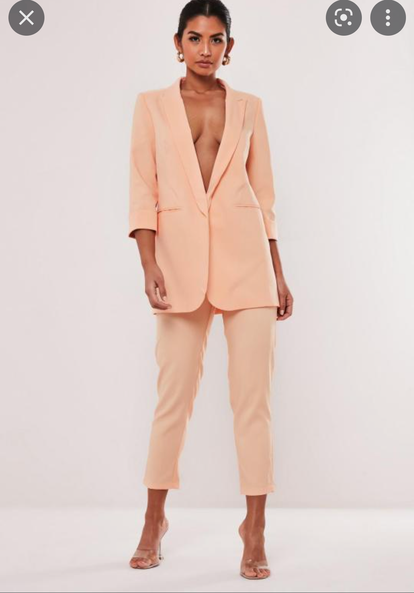
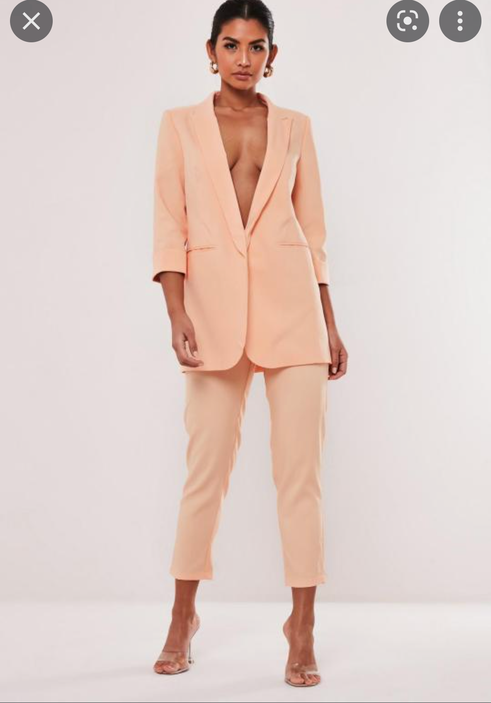
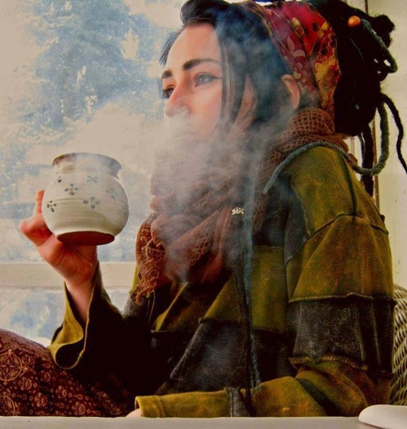
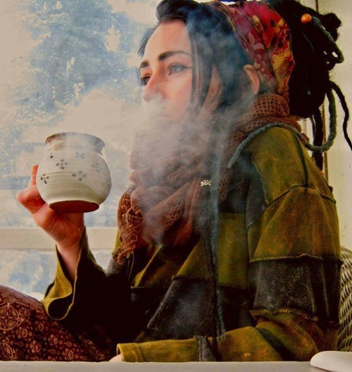

Home
This is a lookbook for photography model sessions that is separated into various styles and looks to help cover a great range of images in a photo session.
Studio Sessions
These are looks that can be captured in a studio photo session. The studio is both limiting and limitless as a place with no background environments but a location to focus on the model using their energy and attitude along with some imagination to set the scene properly.


 



Photos in the Home
For a more limited type of photo session, these are images that can be taken conventionally inside the home. There are dozens of ways to photograph around a good chair, and a window shot is an interesting way to turn a close portrait into an image with a story.

 



The Great Outdoors
These are images we can take in nature or in the city. These are what we can draw inspiration from to capture better images in nature or in the city.


Swimsuit Season
Picture references for a swimsuit photo session. Beach can be substituted for lake area or a sandy location with parasol.


Posing Plans
These are chart references to cover a large variety of poses. Good posing composition is working in triangular shapes to the image by way of the body. Bent arms and outward elbows create upper body triads that draw interest nearer to the face. Bent or outward legs create a secondary triangular shape that can support or compliment the upper body triad with proper posing.


Special Projects
These are concept shots that we can photograph that will specifically be aiming for something similar to this image.
Notes
This is a photo look book made online for ease of reference anywhere you plan for a session. This lightweight site is meant to be a simple reference resource for photography and all pictures are meant as a resource of study. These are images meant to inspire and guide both the model and the photographer into making images with impact.
Happy picture taking :)